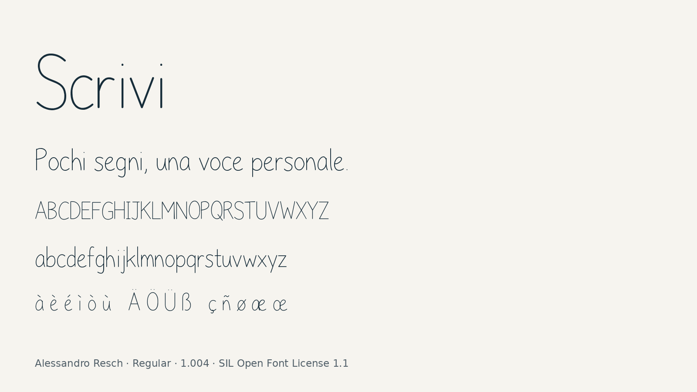

Scrivi is an original monoline handwriting typeface designed by Alessandro Resch. Upright, separated letters, compact spacing and restrained flourishes give the family a light, personal rhythm. It is intended for names, headings and short messages. To contribute, see github.com/r1zr7/scrivi.
The design starts from a simple idea: a handwritten character can remain expressive without requiring elaborate joins or decorative loops. Its letters use few strokes, with rounded ends and slight variations in angle. Those small variations are part of the drawing rather than an applied texture. The result is a quiet handwritten voice that can accompany a product name, introduce a short passage or give a personal accent to a page.
Scrivi currently includes one Regular style. The font covers 392 encoded characters, including ASCII, Latin-1 Supplement, Latin Extended-A and the Google Fonts Latin Core set. Numerals, punctuation, selected symbols and combining marks sit alongside the Latin alphabet. It does not claim coverage of Greek, Cyrillic or Arabic. The light strokes are designed to be seen in short expressive text; longer passages and dense interfaces call for a typeface suited to those reading conditions.
The family includes selected kerning pairs and OpenType positioning for combining marks. Contextual substitutions remove the dot from i and j where appropriate before above accents. Diacritic placement was examined in large and small specimens during development. Selected forms were revised so accents remain separate from tall stems, Romanian commas below remain distinguishable, and the long s and kra have their own shapes. These checks describe the examined samples rather than a guarantee for every possible sequence of marks.
Version 1.004 introduces the name Scrivi, replacing the earlier project name AR Scrittura. The rename updates the font menu name, PostScript name, copyright URL, source paths and distribution materials. The previously reviewed outlines, character coverage, widths, vertical metrics, kerning, substitutions and mark positioning are preserved. The design therefore continues the same drawing while giving the family a short, direct name that invites the reader to write.
The font software is released under the SIL Open Font License 1.1, without Reserved Font Names. Desktop TTF and locally hosted WOFF2 files are available from the upstream project. Editable UFO sources, the original stroke drawing data and build scripts are supplied together. The build regenerates the UFO from those drawings before compiling it with fontmake, allowing the published binaries to be reproduced in the documented environment.
ChatGPT/Codex assisted drawing construction, font engineering, build scripts, testing, documentation and release preparation. Alessandro Resch directed the design decisions and reviewed the visual specimens. Further development can take place through the public repository, where the source, quality reports and publishing status are available.
